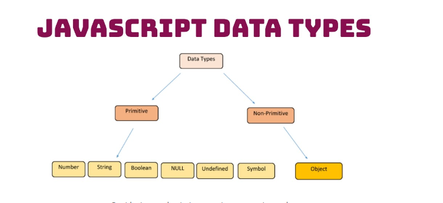
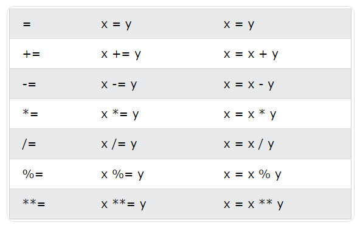
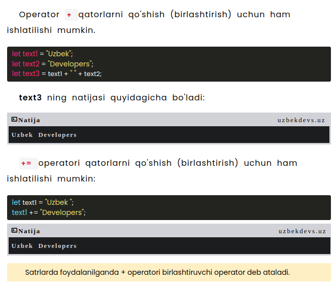
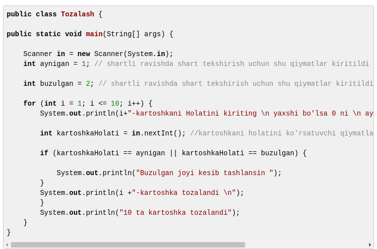
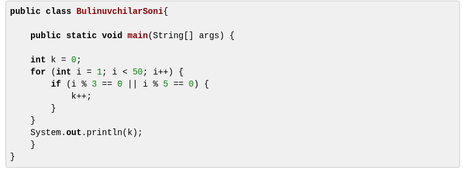
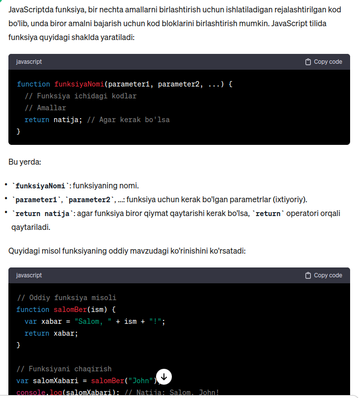
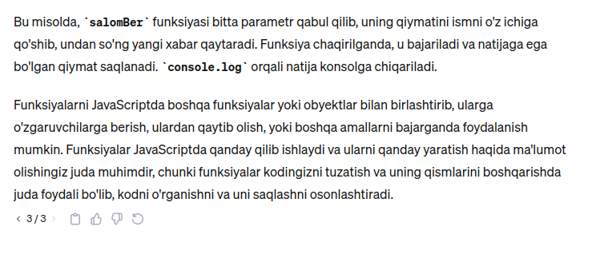
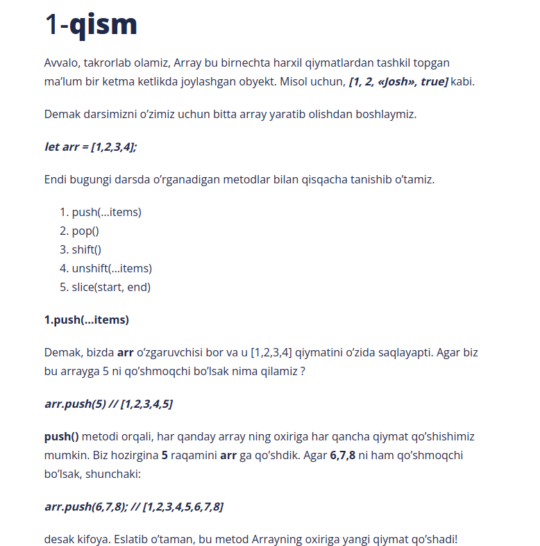

Javascriptda «Data types»
JavaScriptda har bir qiymat o’zining ma’lum bir tipiga ega bo’ladi. JavaScriptda Data types Misol uchun let age = 19; bu holatda age ning tipi number, ya’ni raqam turiga mansub. agar biz 19 qiymatini «19» ga almashtirsak, age ning tipi nimaga teng bo’ladi ? Ha, string ga teng bo’ladi. Keling endi barcha «data type» lar bilan yaqinroq tanishamiz.

1.Primitive tiplar o’zida faqatgina yagona qiymatni saqlay oladigan
tiplardir. Bu tiplarga 7 ta tiplar kiradi. Ular haqida endi gap
ketadi.
2. Non-Primitive tiplar esa o’zida bir qancha tiplardan tuzilgan
ko’plab qiymatlarni saqlay oluvchi tiplardir. Bu turga 1 ta tip
kiradi.
Primitive data types
- number
- string
- Boolean
- Null
- Undefined
- Symbol
- BigInt
bu tiplarning barchasi primitive, chunki bu tiplar faqatgina
yagona qiymatni o’zida saqlay oladi.
Ikkinchi qiymatni qo’sha olmaymiz. Keling endi misollarga o’tamiz.
Ma'lumot uchun pastdagi tugmani bosib ko'ring unda siz script
yozilishni rasmda ifodasini ko'rasiz
Non-Primitive types»
Demak, biz endi gaplashadigan mavzuyimiz Non-primitive tiplar. Bunga
tepada aytganimdek faqatgina birgina tip kiradi. Bu ham bo’lsa
Object tipi. Nega ? Chunki Object lar o’zida bir qancha qiymatni
saqlay olish xususiyatiga ega va ular Reference type hisoblanadi. Bu
haqida alohida maqola yozishim kerak.
Bunga misol: pastki tugmada
JavaScript Operatorlar
JavaScript dasturlash tilida ham boshqa dasturlash tillari singari operatorlar mavjud. Bularga quyidagilarni misol keltirishimiz mumkin.
- Arifmetik operatorlar
- Tayinlash operatorlari
- String Opertorlar
- Solishtirish operatorlari
- Mantiqiy opertorlar
- Bitli operatorlar
JavaScript arifmetik operatorlari
Arifmetik operatorlar raqamlar ustida arifmetikani bajarish uchun
ishlatiladi:
"+" - Qo'shish
"-" - Ayirish
"*" - Ko'paytirish
"**" - Eksponentatsiya (ES2016)
"/" - Bo'lish
"%" - Modul (boʻlinish qoldigʻi)
"++" - 1 ga qo'shib borish
"--" - 1 ga kamaytirib borish
JavaScript Tayinlash operatorlari
JavaScript String operatorlari
JavaScript solishtirish operatorlari
"==" - ga teng
"=== " - qatiyan tenglikni tekshiradi typegacha
"!=" - teng emas
"!==" - qiymat teng emas yoki teng emas
">" - dan katta
"<" - dan kichik
">=" - dan katta yoki teng
"<=" - dan kichik yoki teng
JavaScript mantiqiy operatorlari
"&&" - mantiqiy "va"
"||" - mantiqiy "yoki"
"!" - mantiqiy "emas"
For Loop (Takrorlanuvchi sikl operatori).
Takrorlanuvchi sikl operatorlari
O'z nomi bilan ma'lum bo'lib turibdi takrorlanuvchi ya'ni qandaydir jarayonni qayta va qayta takrorlanishidir. Yerning quyosh atrofida aylanishi yil fasllarning almashinishi va h.k.larni misol qilib keltirish mumkin. Takrorlanuvchi ish harakatlar qandaydir shartlar asosida bajariladi. Ularning boshlang'ich, oxirgi nuqtalari va bajarilish davriyligi mavjud bo'ladi. Misol uchun, yerning quyosh atrofida aylanishini olsak, boshlang'ich nuqta 1-kun ya'ni 1-yanvar oxirgi nuqta 365-kun bu esa 31-dekabr takrorlanishi 1 kunga teng. Atrofimizda bunga o'xshash takrorlanvchi ish harakatlar shunchalik ko'pki, ularni sanab tugata olmaymiz. Misol tariqasida kundalik hayotimizda doimiy sodir bo'ladigan bir jarayoni tahlil qilib, uning javada dasturiy ko'rinishi qanday bo'lishini ko'rib chiqsak. Misol: Tasavvur qiling ovqat tayyorlash uchun 10 ta kartoshkani tozalashga oldik. Qo'limizda 10 ta kartoshka bor ularni tozalash uchun birinchi kartoshkadan boshlab 10-kartoshkagacha tozalamaguncha xar bir kartoshkani birma-bir tozalab chiqamiz. O'z-o'zidan ko'rinib turibdi kartoshka tozalash jarayoni ketma-ket sodir bo'lyapti(bu jarayon siklga misol bo'la oladi) Tozalangan kartoshkalar o'sib borish qiymati 1 ga teng (chunki ikki yoki undan oshiq kartoshkani bir vaqtda tozalab bo'lmaydi odatda) Boshlang'ich qiymati ham 1 ga teng Agar kartoshkani tozalash jarayonida kartoshkani iste'molga yaroqsiz joylari bo'lsa, kesib tashlanadi ya'ni inson miyasida shu shartlar tekshiriladi. Bu jarayonni tozalangan kartoshkalar soni 10 ga teng bo'lguncha amalga oshiramiz. Keling endi bu jarayonlarni java da dasturini tuzib chiqaylik.
Sikl boshlangandan sikl sharti false(yolg'on) qiymat bo'lmaguncha davom etadi. Sikl sharti false bo'lgan sikl tugatiladi. Misol: 1 dan 10 gacha bo'lgan sonlarni ekranda chiqarish
Siklning boshlang'ich qiymati 1 ga teng takrorlanishi ham 1 ga teng i ning qiymati o'sib borib qiymat 10 ga teng bo'lmaguncha davom etadi. Yanada tushunarliroq bo'lishi uchun boshqa bir misolni ham ko'rib chiqsak. Berilgan sondan shu songacha bo'lgan raqamlar orasida 3 va 5 ga bo'linadigan raqamlar sonini topish.
Funksiyalar
 Darsga oid topshiriqlar
1. Berilgan sondan keyingi sonni qaytaruvchi funksiya yozing.(pastdagi tugmaga bosing va javobni tekshiring)

2. Berilgan 2 ta son yig'indisini qaytaruvchi funksiya tuzing
3. Berilgan soatni sekundga aylantiruvchi funksiya tuzing
4.Kvadrat tomoni berilgan perimetri va yuzini topuvchi funksiya tuzing
5.Berilgan sonni toq yoki juft ekanini aniqlovchi funksiya tuzing

6.Berilgan sonni musbat yoki manfiyligini aniqlovchi funksiya tuzing

7.Yosh kiritilganda odam necha kun va necha soat yashaganini hisoblovchi dastur tuzing.
Films task
1 Foydalanuvchidan filmni yoqtirishi so'raydi
2. Agar xa deb javob bersa davom etilsin va yoqtirgan janrlar
so'raydi
3 Va yoqtirgan filmlar soni so'raydi
4. Agar filmlar soni 4 tadan ko'p bo'lsa alertga yozishga
erinmaysizmi deb so'raydi
5 Keyin janr bo'yicha yoqtirgan filmlar kiritish so'raydi
6. Agar filmar bo'sh qoldirilsa siz hech nima kiritmadiz iltimos
qaytadan urinib ko'ring deyiladi
6. Barcha shart bajarilsa Oxirida janr bo'yicha yoqtirgan filmlar
chiqariladi
If10. A va B butun sonlar berilgan Agar o'zgaruvchilar o'zaro teng bo'lmasa A va B o'zgaruvchilar yig'indini o'zlashtirsin.Agar teng bo'lsa 0 ni o'zlashtirsin . A va B ni qiymati ekranga chiqarilsin.

Java script Array
2 Pop()